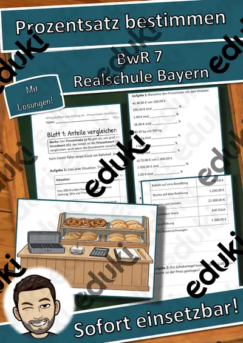
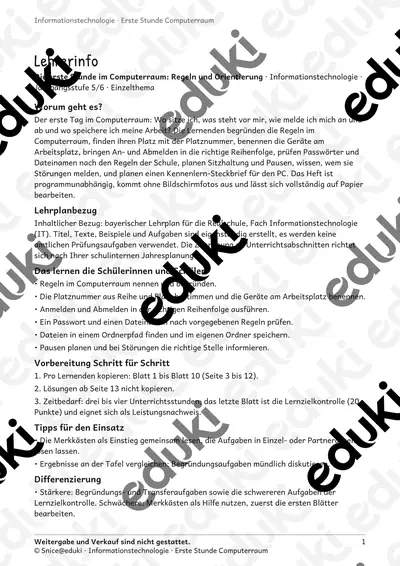
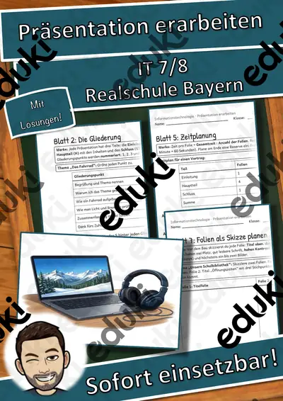

Tabellenkalkulation: erste Tabelle, erste Formel – Arbeitsheft mit Lösungen (IT 6/7, Realschule)
Eine Tabellenkalkulation rechnet automatisch, sobald man sie mit Formeln füttert. Die Lernenden lernen das Tabellenblatt mit Zeilen, Spalten und Zellen kennen, bestimmen Zelladressen, unterscheiden Text, Zahl und Formel, schreiben Formeln mit Grundrechenarten und Zellbezügen und erfahren, warum eine Formel sich selbst aktualisiert, wenn sich ein Wert ändert. Sie suchen Fehler in Formeln und planen eine kleine Tabelle.
Für das Fach Informationstechnologie (IT), Jahrgangsstufe 6/7, an der Realschule in Bayern.
Enthalten (13 Seiten): Lehrerinfo mit Einsatzhinweisen · 9 Arbeitsblätter, u. a. Das Tabellenblatt; Zellen finden und beschreiben; Text, Zahl oder Formel?; Formeln mit Grundrechenarten; Formel statt Zahl; Fehler in Formeln finden; Taschengeld-Tabelle · Lernzielkontrolle · Lösungen zu allen Blättern.
Einsatz: Übung und Vertiefung im Unterricht, als Hausaufgabe, zur Wiederholung oder in Vertretungsstunden. Zum Ausdrucken und Kopieren. Alle Namen, Betriebe und Beträge in den Aufgaben sind erfunden.
Texte KI-gestützt und vom Autor geprüft.
Ähnliche Materialien

Tabellenkalkulation: Übungsreihe 1 – Arbeitsheft mit Lösungen (IT 6/7, Realschule Bayern)

Tabellenkalkulation – Zellen, Formeln, Diagramme – Lesespurgeschichte mit Rätselaufgaben (Klasse 9)

Zellbezüge: relativ oder absolut – Arbeitsheft mit Lösungen (IT 6/7, Realschule Bayern)

Programmieren lernen: erste Schritte – Arbeitsheft mit Lösungen (IT 6/7, Realschule Bayern)

Erste Schritte beim Schreiben am Computer – Arbeitsheft mit Lösungen (IT 5/6, Realschule Bayern)

Prozentsatz bestimmen – Arbeitsheft mit Lösungen (BwR 7, Realschule Bayern)

Die erste Stunde im Computerraum – Arbeitsheft mit Lösungen (IT 5/6, Realschule Bayern)
